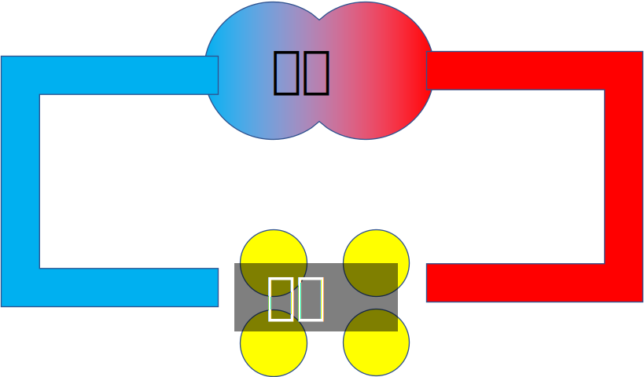
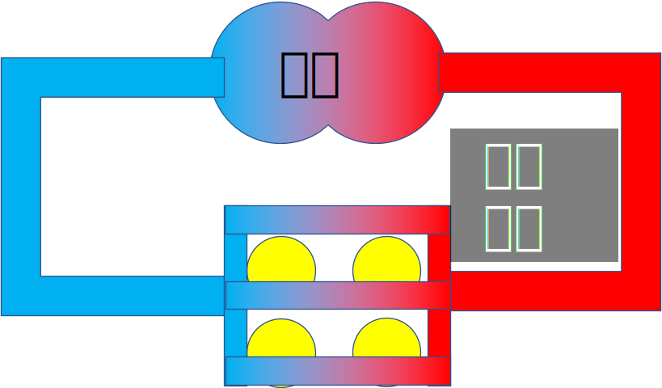
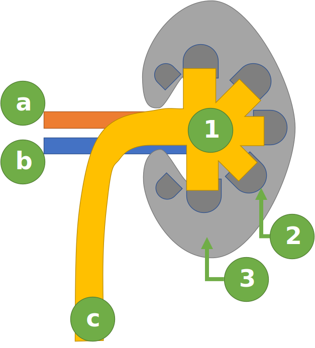
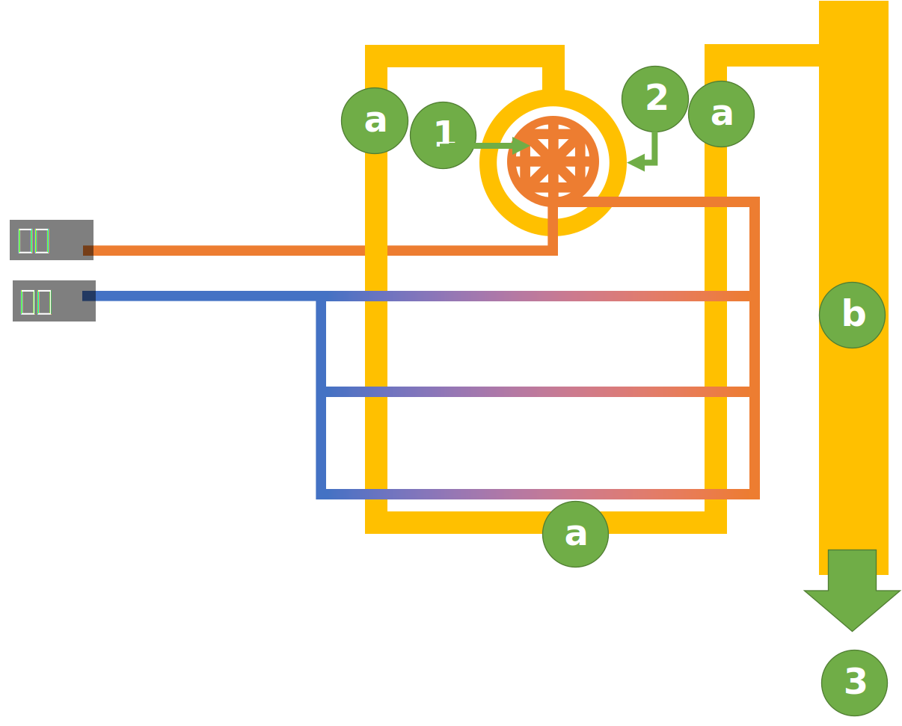
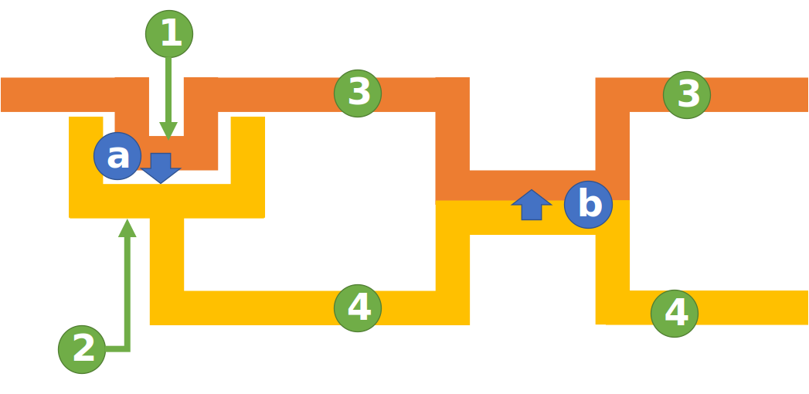

体内環境と対外環境
- 体外環境
- 細胞に囲まれていない外側の空間。
- 体内環境
- 細胞に囲まれている空間。体液で構成され、体内環境は一定に維持されている。
体液
体液の種類
-
- 血しょう
- 血管を流れる血液の液体成分
-
- 組織液
- 組織の細胞を取り巻く液体成分
-
- リンパ液
- 免疫に働いていて、リンパ管をとおる。
血液の成分
-
- 赤血球
- 酸素の運搬をする。 核を持たない。
-
- 白血球
- 免疫。 核を持つ。
-
- 血小板
- 血液凝固
血球は造血幹細胞(脊髄にある)と呼ばれる細胞が分化したものである。
循環
血管
-
- 動脈
- 心臓から各毛細血管に向かって流れている血管。
- 比較して、平滑筋と呼ばれる筋肉が厚く、血液が速く流れても耐えられる作りになっている。
-
- 静脈
- 各毛細血管から心臓に向かって流れている血管。
- 弁が存在する。
血管系
-
- 開放血管系
- 
- 血管が途中で途切れていて、各細胞に酸素を供給する。
- 血液はいったん血管外に出て、各組織を経て血管内に戻り、心臓に帰ってくる。
- e.g.) 軟体動物, 節足動物
-
- 閉鎖血管系
- 
- 血管が途中で途切れておらず、毛細血管を用いて各細胞に酸素を供給する。
- 血液の大部分は血管を出ず、毛細血管を経て心臓に帰ってくる。
- e.g.) 脊椎動物, 環形動物
心臓
心臓のつくり
見ずらい心臓の図をPowerPointで作りました。(ノルマ)
Wikipediaに載っている心臓の図のほうが見やすいです。
以下の[1] - [4]と、[A] - [D]は、図の緑丸, 水色丸と一致しています。
心臓の部位
-
- [1]: 右心房
- 体内から来た静脈血を受け取る[受け取る/送り出す]
-
- [2]: 右心室
- 静脈血を肺に送り出す[受け取る/送り出す]
-
- [3]: 左心房
- 肺から来た動脈血を受け取る[受け取る/送り出す]
-
- [4]: 左心室
- 動脈血を体内に送り出す[受け取る/送り出す]
-
- [A]: 大静脈
- 静脈血が流れる。
-
- [B]: 大動脈
- 動脈血が流れる。
-
- [C]: 肺動脈
- 静脈血が流れる。
-
- [D]: 肺静脈
- 動脈血が流れる。
赤血球
ヘモグロビン
α鎖が2本と、β鎖が2本の、計4本のポリペプチドが結合したタンパク質
ヘモグロビン周囲の酸素が豊富な時は酸素と結合し、少ないときは酸素を放す。
ミオグロビン
1本のポリペプチドのタンパク質
筋肉に存在する。
ヘモグロビンに比べ、低い酸素濃度でも酸素と結合可能
血液凝固
血管が破れたら...
- 血管が破れたら、最初に敗れた個所に血小板が集まり、壁を作る。
- それと同時に血液中の血液凝固因子やCa+が集まり、血液中のプロトロンビンという物質をトロンビンという酵素に変える。
- 2. で発生した酵素は、血液中のフィブリノーゲンという物質をフィブリンという物質に変える。
- 3. で発生した物質が, 白血球, 赤血球などをつなげて壁を作る。 (これを「血ぺい」という)
- 4. の壁で止血している間に、血管を修復する。
- 血管修復後は、4. の壁を溶かす「線溶(フィブリン溶解)」という現象が起こる。
肝臓
他の臓器とのつながり
-
- 肝門脈
- [1]小腸から[2]肝臓へ流れている。
- [1]で吸収した物質を含んでいるので、他の血液とは異なる成分が流れている。
-
- 胆管
- [3]肝臓から[4]十二指腸へ流れている。
- [3]でビリルビンや、胆汁酸などから合成した胆汁を、[4]に放出する。
肝臓のつくり
-
- [1]肝小葉
- 肝臓の1単位
-
- [2]中心静脈
- [1]の中央を通る。
-
- [3]肝門脈
- 小腸から流れてくる
-
- [4]肝動脈
-
- [5]胆管
- 十二指腸へ流れていく
-
- [6]肝細胞
-
- [a]胆細管
- [2]中心静脈とはつながっておらず, [5]胆管方面に, 流れている。
-
- [b]類洞
- 酸素と小腸で吸収した物質を含んでおり, [3]肝門脈と[4]肝動脈から, 中心静脈に向けて流れている。
肝臓のお仕事
血統濃度調節
血糖: 血液中のグルコース (約0.1%)
血糖多: 血液中のグルコースからグリコーゲンを合成して, 肝臓に貯蓄
血糖少: 貯蓄したグリコーゲンをグルコースに戻す。
グリコーゲン: グルコースがつながったもの。
腎臓
構造
１つの腎臓
-
- [1]腎う
-
- [2]髄質
-
- [3]皮質
-
- [a]腎動脈
-
- [b]腎静脈
-
- [c]輸尿管
- ぼうこうに向かって伸びている。
1つのネフロン
1つの腎臓中に, 100万個のネフロンがある。
-
- [1]糸球体
-
- [2]ボーマンのう
- [1], [2]を合わせて腎小体
-
- [3]腎うへつながっている。
-
- [a]細尿管
-
- [b]集合管
- 沢山のネフロンの[a]が合流して[b]になる。
尿生成の仕組み
構造
- [1]糸球体
- [2]ボーマンのう
- [3]毛細血管
- [4]細尿管
仕組み
-
[a]: [1] ⇒ [2] で, 血しょうがろ過されて, 原尿ができる。
-
[b]: 1. でろ過された物質の一部は[4]を通り, [b]で「再吸収」される
-
再吸収済みの液体は腎うに運ばれて, 最終的には尿となる
ろ過, 再吸収される物質
| ろ過 | 再吸収 | |
|---|---|---|
| タンパク質 | × | × |
| グルコース | ○ | ○ |
| 尿素 | ○ | × |
⇒ 尿中の質量パーセント濃度が高い物質は不要な物質
塩類濃度調節
細胞内外の濃度と, 水の移動の関係
| 細胞内 | 細胞外 | 水の移動 |
|---|---|---|
| 濃 | 薄 | 細胞内 ← 細胞外 |
| 等 | 等 | 細胞内 ⇄ 細胞外 |
| 薄 | 濃 | 細胞内 → 細胞外 |
魚類の濃度調節
海水性硬骨魚類
海水の濃度は, 体内濃度よりも濃い[薄い/濃い]。
したがって水分は出る[出る/入る]。
水分不足[過剰/不足]のため, 海水を飲む[飲む/飲まない]
海水には塩類が含まれるのでえらの塩類細胞で, 塩類を排出する。
尿で, 塩類[塩類/水分]を排出する。
尿濃度は, 体液と比べ等濃度[低濃度/等濃度/高濃度]。
尿量は少量[少量/多量]
淡水性硬骨魚類
海水の濃度は, 体内濃度よりも薄い[薄い/濃い]。
したがって水分は入る[出る/入る]。
水分過剰[過剰/不足]のため, 海水を飲まない[飲む/飲まない]
失われていく塩類はえらから取り込む。
尿で, 水分[塩類/水分]を排出する。
尿濃度は, 体液と比べ低濃度[低濃度/等濃度/高濃度]。
尿量は多量[少量/多量]
海水性軟骨魚類
尿素を体内にため込むことによって, 体液塩類濃度を海水とほぼ同じように保っている。
カニの濃度調節
カニは海水部分と淡水部分を行き来する。
-
- ミドリガニ
- 河口付近に生息する
- 海水に近い環境のときでも, 淡水が流入してきて塩類濃度が低い環境でも対応できる。
- ⇒ 外液濃度が低いとき, 体液の濃度調節
-
- ケアシガニ
- 外洋に住む。
- 体内濃度調節能力は発達していない
- ⇒ 外液と体液の塩類濃度の値が同じになる
-
- モクズガニ
- 海でタマゴがふ化して, 生態になるにつれて川に移動し, 産卵時期に海に戻る。
- 体内濃度調節能力が発達している。
- ⇒ 外液濃度が低いとき, 高いときは体液濃度調節を行って, 体内濃度を一定に保とうとする。
共通して, 外液濃度は0.8 - 1.1 (相対値)の時は, どのカニにとっても生きるのに適している
⇒ 濃度調節せず。